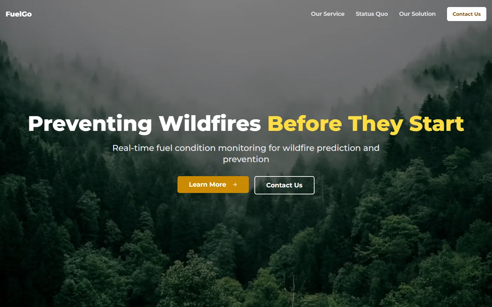

A concept for catching wildfire risk before ignition: solar-powered sensors that measure how dry the forest’s fuel actually is, relayed by satellite from terrain with no infrastructure.
Pitched to the lead of Microsoft Garage Vancouver, followed up in person with a Deloitte managing director, and presented to 300+ attendees at a technology showcase.

The mockup website we built to pitch the concept.
the problem
Wildfire management is mostly reactive. Agencies rely on outdated fuel maps, satellite imagery that arrives days late and weather forecasts, none of which measure conditions on the ground. Crews act after a fire has started.
the design
Sensor nodes: solar-powered, ultra-low-power and hand-deployable, measuring dead fuel and soil moisture, air and ground temperature, humidity and barometric pressure.
Mesh network: each node relays data node to node until it reaches a transmission node, so losing one node does not break the chain.
Satellite uplink: transmission nodes carry Swarm satellite modems, so the network works where there is no cellular coverage.
Risk model: a cloud platform runs a threshold-based model on the readings and raises an alert when conditions cross a critical level, giving crews days of notice instead of hours.
who we pitched it to
The person who led Microsoft Garage in Vancouver.
A Deloitte managing director, in a follow-up meeting at his office to discuss the project’s feasibility and cost per square kilometre.